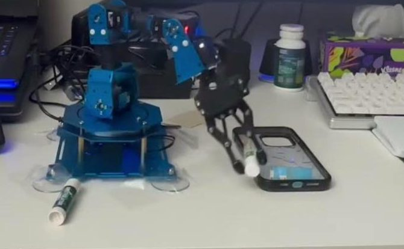
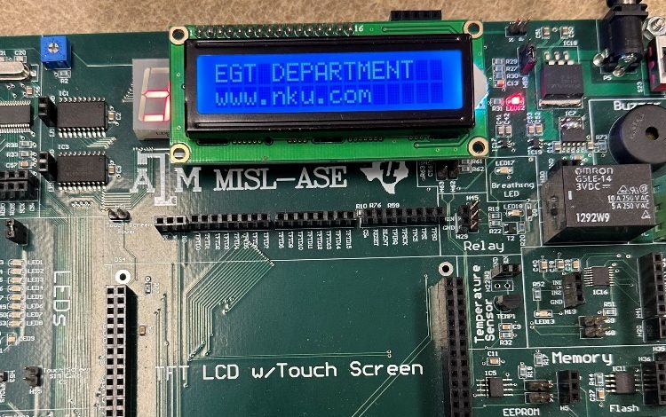

Coupled Physical Field Simulation based on COMSOL
COMSOL and MATLAB models of silicon under bending, elongation and torsion, analyzing the coupled mechanical and electrical response.
M.S. student in Computer Engineering, NYU Tandon School of Engineering
I build robots that see and act: real-time perception wired into control, on hardware with tight compute budgets.
Looking for a research position starting Spring 2027
 Play demo on YouTube
Play demo on YouTube
A Raspberry Pi 5 car that detects obstacles with an onboard camera and drives itself around them, with perception and motor control running in one real-time loop.
Runtime health checks tracked frame rate, queue length and control latency.

Play demo on YouTubeA Hiwonder 6-DoF arm programmed to pick objects up and place them at predefined coordinates, building a multi-piece arrangement.
Coursework the projects above stand on: register-level C on a microcontroller, and ladder logic on a PLC.

The LCD, keypad and UART labs were done with a lab partner.
COMSOL and MATLAB models of silicon under bending, elongation and torsion, analyzing the coupled mechanical and electrical response.
An attention-enhanced multitask network with a shared encoder and task-specific heads that learns offloading and resource allocation jointly.
Built device-to-cloud telemetry and cloud-to-device commands for a battery management system over cellular, under tight CPU and RAM limits and unreliable links. Modularized the MQTT messaging and command path, and set up a one-command build and deploy.
Coursework: Machine Learning, Computing Systems Architecture, Data Structures and Algorithms.
GPA 3.52 / 4.0, cum laude. Dean's Scholarship (top 5%, 2024) and Scholar's List (2025).